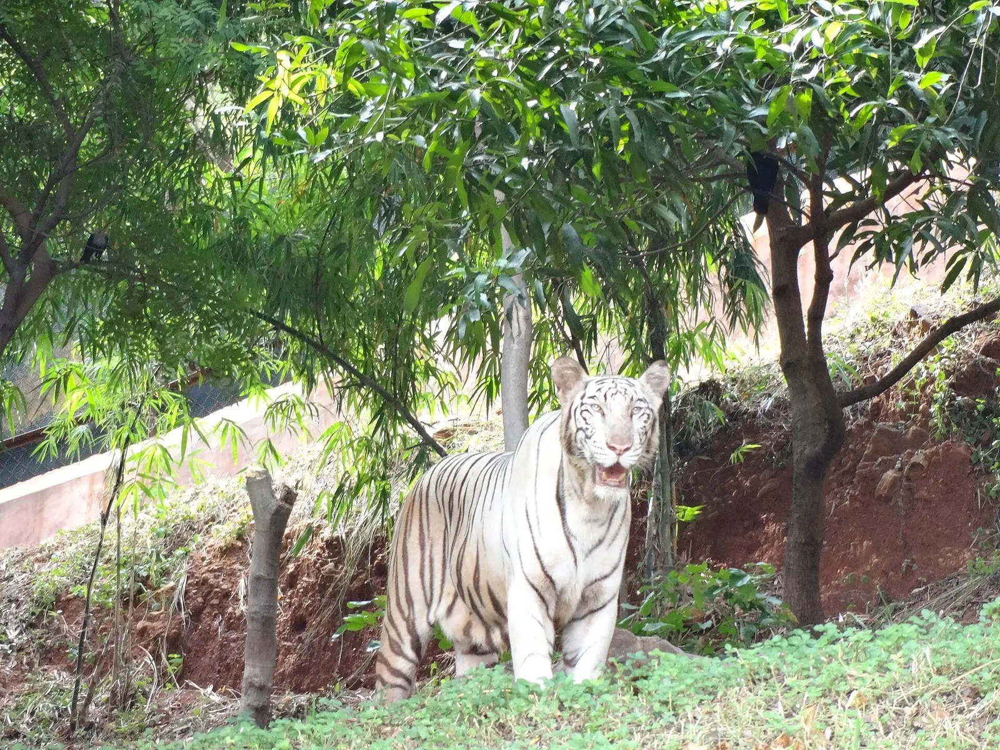

Day 2 · Stop 07 · Forest zoo
Optional stop · not in the timeline yet
Indira Gandhi Zoological Park
Vizag Zoo in the Kambalakonda forest
A 625-acre forest zoo between the Eastern Ghats and the sea, home to about 80 species.
- 625 acres of forest
- About 80 species
- Open since 1977

About Indira Gandhi Zoological Park
Indira Gandhi Zoological Park sits inside the Kambalakonda Reserve Forest, with the Eastern Ghats on three sides and the Bay of Bengal on the fourth. Spread over 625 acres, it opened on 19 May 1977 and is one of the largest zoos in India.
Around 800 animals of nearly 80 species live here: Bengal tigers, Asiatic lions and Indian elephants, greater one-horned rhinos, hippos, giraffes and chimpanzees. All three Indian crocodilians (the mugger, the gharial and the saltwater crocodile) live here too.
In 2022 the World Association of Zoos and Aquariums recognised the zoo for its successful breeding programme for the dhole, the Indian wild dog.
What we'll see
- Big cats: tigers, a white tiger, lions and leopards
- Rhinos, hippos, giraffes and elephants
- Three species of Indian crocodile
- Forest trails with the Eastern Ghats behind
Photo gallery


Crew plan · Day 2 · Stop 7 of 8
Not in the timeline yet: we'll fit it in if there's time.
Not in the timeline yet: a bonus stop if Day 2 runs ahead of schedule, or one for the next trip.
Open in Google MapsTips
- The zoo is closed on Mondays.
- It's huge: start early and wear walking shoes.
- Carry water; the trails are long and the afternoons warm.